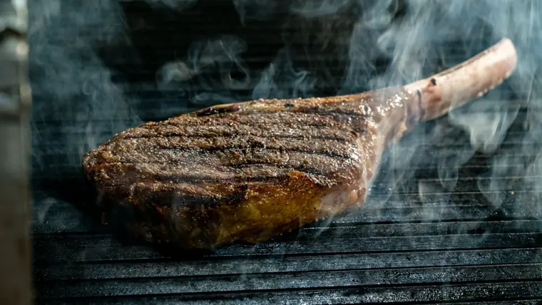

Demorestaurant
Steakhouse · Demostadt · Herbst 2026
Vorspeisen
-
Rindstatar «Demo»CHF 26.–
Von Hand geschnitten, Eigelb, Kapern, Schalotten, Cognac, getoastetes Brioche
120 gSchweiz
-
RindscarpaccioCHF 24.–
Hauchdünn, Rucola, gereifter Parmesan, Trüffel-Vinaigrette
100 gSchweiz
-
Gegrillte MarkknochenCHF 22.–
Petersilien-Kapern-Salat, Fleur de Sel, geröstetes Sauerteigbrot
2 Stück
-
Grill-CrevettenCHF 28.–
Knoblauchbutter, Chili, Limette, Kräuter
4 StückVietnam, ASC
-
Caesar SaladCHF 19.–
Romanaherz, knuspriger Speck, Croûtons, Sardellen-Dressing, Parmesan
Vegetarisch ohne Speck möglich
-
Hummer-BisqueCHF 18.–
Cognac, Rahmhaube, Estragon-Öl
2 dl
Steaks
Über Buchenholzkohle und bei 800 °C gegrillt, mit Fleur de Sel und Rosmarinbutter. Garstufe nach Wunsch – siehe Fleisch-Guide.

-
FiletCHF 58.– / 79.–
Schweizer Rinderfilet, die zarteste Art, Steak zu geniessen. Mit Fleur de Sel und Rosmarinbutter.
200 g / 300 gSchweizEmpfohlen: Rare – Medium Rare
Wein-Empfehlung: Pinot Noir, Fläsch AOC, Graubünden – seidig, mit Kirschfrucht; drängt das feine Filet nicht in den Hintergrund.
-
Entrecôte Dry AgedCHF 52.– / 68.–
21 Tage am Knochen gereift, mit Fettrand für das volle Aroma. Der Schweizer Klassiker.
250 g / 350 gSchweizEmpfohlen: Medium Rare
Wein-Empfehlung: Merlot del Ticino DOC – samtig, mit reifer Pflaume und dezentem Holz; schmeichelt der nussigen Reifenote.
-
Bestseller
RibeyeCHF 62.–
Aus der Hochrippe, kräftig marmoriert, mit saftigem Fettauge. Grasgefüttert.
300 gIrlandEmpfohlen: Medium Rare
Wein-Empfehlung: Malbec, Mendoza, Argentinien – dunkle Beeren, weiche Tannine und genug Kraft für das Fett.
-
T-BoneCHF 89.–
Roastbeef und Filet am T-förmigen Knochen – zwei Steaks in einem. Black Angus.
600 gUSAEmpfohlen: Medium Rare
Wein-Empfehlung: Cabernet Sauvignon, Napa Valley – Cassis, Zedernholz, kräftige Struktur für das grosse Stück.
-
Zum Teilen
Tomahawk Dry AgedCHF 169.–
Hochrippe mit langem Rippenknochen, 35 Tage gereift, am Tisch tranchiert. Mit zwei Beilagen und zwei Saucen.
ca. 1.2 kgFür 2 PersonenSchweizBitte vorbestellen
Wein-Empfehlung: Barolo DOCG, Piemont – Rosen, Teer und markante Gerbstoffe; ein Wein mit Statur für das Showpiece.
-
Wagyu StriploinCHF 95.–
Marmorierung MB 6/7, nur kurz und heiss gegrillt, mit Meersalz aus dem Wallis.
200 gAustralienEmpfohlen: Medium Rare
Wein-Empfehlung: Syrah, Wallis AOC – Pfeffer, Veilchen und eine frische Säure, die das reiche Fett aufnimmt.
Beilagen
-
Pommes allumettesCHF 9.–
Fein geschnitten, Fleur de Sel
-
Trüffel-PommesCHF 13.–
Parmesan, Trüffelöl, Schnittlauch
-
KartoffelstockCHF 9.–
Mit brauner Butter
-
GrillgemüseCHF 10.–
Zucchetti, Peperoni, Aubergine, Kräuteröl
-
RahmspinatCHF 9.–
Muskatnuss, ein Hauch Knoblauch
-
Mac & CheeseCHF 12.–
Gratiniert mit Bergkäse
-
Maiskolben vom GrillCHF 9.–
Chili-Limetten-Butter
-
Gemischter SalatCHF 9.–
Hausdressing, Kerne
Saucen
Hausgemacht · je CHF 5.– · zu jedem Steak eine Sauce inklusive
-
Café de Paris-ButterCHF 5.–
Hausrezept mit 18 Zutaten
-
Sauce BéarnaiseCHF 5.–
Estragon, aufgeschlagen
-
PfeffersauceCHF 5.–
Grüner Pfeffer, Cognac, Rahm
-
ChimichurriCHF 5.–
Petersilie, Oregano, Knoblauch, Chili
-
RotweinjusCHF 5.–
Lange eingekocht, Thymian
-
Bourbon-BBQCHF 5.–
Rauchig, hausgemacht
Desserts
-
SchokoladenkuchenCHF 16.–
Mit flüssigem Kern, Vanilleglace, Beeren
-
Crème brûléeCHF 14.–
Tahiti-Vanille, karamellisiert am Tisch
-
New York CheesecakeCHF 15.–
Gesalzenes Karamell, Kekscrumble
-
Meringue mit DoppelrahmCHF 14.–
Doppelrahm aus dem Greyerzerland, Waldbeeren
-
Sorbet-TrioCHF 12.–
Saisonale Sorten, hausgemacht
-
Käse aus der RegionCHF 19.–
Fünf Sorten, Feigensenf, Früchtebrot
Menüs
Feste Mehrgang-Menüs, ab 2 Personen · Garstufe nach Wunsch · vegetarische Variante auf Anfrage
Steakhouse Classic
3 Gänge
- Caesar SaladRomanaherz, knuspriger Speck, Croûtons, Sardellen-Dressing
- Entrecôte Dry Aged 250 g21 Tage gereift, Pommes allumettes, Café de Paris-Butter
- Crème brûléeTahiti-Vanille, am Tisch karamellisiert
CHF 89.– pro Person
Weinbegleitung + CHF 39.– (3 × 1 dl)
Grill Experience
4 Gänge
- Gegrillte MarkknochenPetersilien-Kapern-Salat, Sauerteigbrot
- Grill-CrevettenKnoblauchbutter, Chili, Limette
- Ribeye 300 gGrasgefüttert aus Irland, Grillgemüse, Chimichurri
- SchokoladenkuchenFlüssiger Kern, Vanilleglace, Beeren
CHF 119.– pro Person
Weinbegleitung + CHF 49.– (4 × 1 dl)
Chef's Tasting
6 Gänge · bestellbar bis 21:00 Uhr
- Amuse-BoucheGruss aus der Küche
- Rindstatar «Demo»Eigelb, Kapern, Brioche
- Hummer-BisqueCognac, Estragon-Öl
- Filet & Wagyu im DuettSchweizer Filet 120 g und Wagyu Striploin 80 g, Kartoffelstock, Rotweinjus
- Käse aus der RegionFeigensenf, Früchtebrot
- Meringue mit DoppelrahmGreyerzer Doppelrahm, Waldbeeren
CHF 159.– pro Person
Weinbegleitung + CHF 79.– (6 × 1 dl)
Weine
Eine Auswahl aus über 120 Positionen – fragen Sie nach unserer Kellerkarte.
| Wein | 1 dl | 75 cl |
|---|---|---|
| Rotweine | ||
| Pinot Noir Fläsch AOC, Graubünden | 12.– | 78.– |
| Merlot del Ticino DOC, Tessin | 11.– | 72.– |
| Syrah Wallis AOC | 13.– | 84.– |
| Malbec Mendoza, Argentinien | 10.– | 64.– |
| Cabernet Sauvignon Napa Valley, USA | 16.– | 110.– |
| Barolo DOCG, Piemont, Italien | 18.– | 125.– |
| Rioja Reserva DOCa, Spanien | 12.– | 79.– |
| Weissweine & Schaumwein | ||
| Chasselas Lavaux AOC, Waadt | 9.– | 58.– |
| Chardonnay Bourgogne AOC, Frankreich | 14.– | 92.– |
| Petite Arvine Wallis AOC | 12.– | 76.– |
| Champagne Brut AOC, Frankreich | 17.– | 110.– |